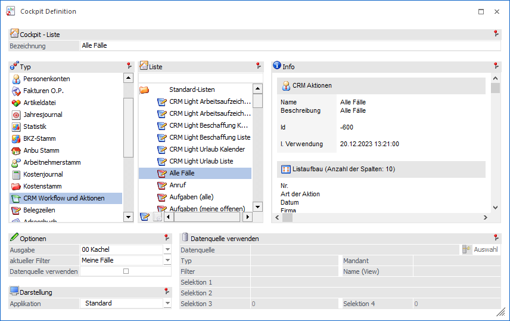
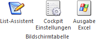
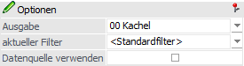
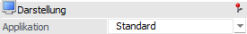
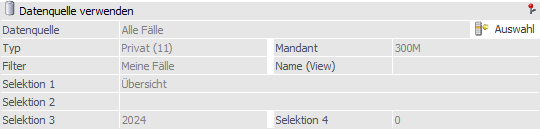

Mit dem Element "Liste" können Auswertungen abgerufen werden, welche im Programm WinLine LIST (WinLine LIST - Liste - Assistent) erstellt wurden.
Achtung
Für die Definition von WinLine LIST-Listen ist die Lizenz für den WinLine LIST erforderlich.
Hinweis
Was von der Liste "wie" (welche Spalten, wie viel Datensätze, Inhalt eines Kalenders bzw. einer Grafik) im Cockpit dargestellt werden soll, kann bei der Listdefinition eingestellt werden (Details hierzu entnehmen Sie bitte dem WinLine LIST - Handbuch).

Die folgenden Einstellungen können vorgenommen werden:
Ø Bezeichnung
An dieser Stelle erfolgt die Eingabe der Bezeichnung, welche in weiterer Folge im Cockpit angezeigt werden soll.
Hinweis
Durch Auswahl einer Liste wird die Bezeichnung automatisch vorbelegt.
Ø Typen-Auswahl (linke Tabelle)
Mit Hilfe der Typen-Auswahl wird definiert, welche Listen in der Listen-Auswahl zur Verfügung stehen sollen. Neben den List-Typen stehen noch folgende weitere Auswahlen zur Verfügung:
ü
In der Rubrik "Meine letzten Listen"
werden jene 11 Listen angezeigt, welche vom Benutzer zuletzt ausgegeben
wurden.
ü
In der Rubrik "Meine Favoriten" werden
die eigenen Favoriten angezeigt. Die Favoriten werden im List-Assistenten mit
Hilfe des Buttons "zu Favoriten hinzufügen" definiert.
Ø Listen-Auswahl (rechte Tabelle)
Mit Hilfe der Listen-Auswahl wird definiert, welche Liste im Cockpit angezeigt bzw. dargestellt werden soll.
Tabellenbuttons "Listen-Auswahl"

Ø List-Assistent
Durch Anwahl des Buttons "List-Assistent" wird der Programmbereich "List - Assistent" (Applikation WinLine LIST) geöffnet.
Ø Cockpit Einstellung
Mit Hilfe des Buttons "Cockpit Einstellungen" wird das Fenster "List - Cockpit Einstellungen" geöffnet. In diesem können die Cockpit Einstellungen der aktiven WinLine LIST Liste überarbeitet werden (nähere Information entnehmen Sie bitte dem Kapitel "List - Cockpit Einstellungen").
Ø Ausgabe Excel
Durch Anwahl des Buttons "Ausgabe Excel" wird der Inhalt der Tabelle an Microsoft Excel übergeben.
Optionen

Ø Ausgabe
Mit Hilfe einer Auswahlliste wird definiert, in welcher Variante die Liste im Cockpit dargestellt werden soll. Hierbei stehen folgende Möglichkeiten zur Verfügung:
ü 00 - Kachel
Die Liste wird im
Cockpit in Form einer Kachel dargestellt. Durch Anwahl der Kachel wird die Liste
ausgegeben.
ü 24 - Kachel (Anzahl)
Die Liste
wird im Cockpit in Form einer Kachel dargestellt und in dieser die Anzahl der
aktuellen Zeilen angezeigt. Durch Anwahl der Kachel wird die Liste
ausgegeben.
ü 01 - Hintergrundprozess
Die
Liste wird im Hintergrund abgearbeitet, d.h. wenn das Cockpit neu aufgebaut
wird, dann kann im Programm trotzdem weitergearbeitet werden, weil die Liste in
einem eigenen Prozess abgehandelt wird und das Ergebnis erst dann dargestellt
wird, wenn der Prozess fertig ist. Die Darstellung im Cockpit erfolgt hierbei in
Form einer Tabelle.
Hinweis
Listen mit der Ausgabevariante "Hintergrundprozess" werden im Cockpit in einem eigenen Bereich dargestellt, d.h. diese werden mit einer eigenen Überschrift versehen.
ü 02 bis 05 - Kalender
Der Inhalt
der Liste wird in Form eines Kalenders dargestellt.
Hinweis
Listen mit der Ausgabevariante "Kalender" werden im Cockpit in einem eigenen Bereich dargestellt, d.h. diese werden mit einer eigenen Überschrift versehen. Des Weiteren ist ab Version 12 der Zeitraum nicht mehr abhängig von der hier getroffenen Einstellung, sondern kann individuell pro Kalender-Widget im Cockpit definiert werden (der Standardvorschlag stammt hierbei aus der WinLine LIST-Liste).
ü 06 - Chart Diagram
Der Inhalt
der Liste wird in Form einer Grafik dargestellt.
Hinweis
Listen mit der Ausgabevariante "Chart Diagram" werden im Cockpit in einem eigenen Bereich dargestellt, d.h. diese werden mit einer eigenen Überschrift versehen.
ü 21 - Direktausgabe Formular
Die
Liste wird im Cockpit direkt dargestellt
ü 22 - Hintergrundprozess
Formular
Die Liste wird im Hintergrund abgearbeitet, d.h. wenn das Cockpit
neu aufgebaut wird, dann kann im Programm trotzdem weitergearbeitet werden, weil
die Liste in einem eigenen Prozess abgehandelt wird und das Ergebnis erst dann
dargestellt wird, wenn der Prozess fertig ist.
Hinweis
Listen mit der Ausgabevariante "Hintergrundprozess" werden im Cockpit in einem eigenen Bereich dargestellt, d.h. diese werden mit einer eigenen Überschrift versehen.
ü 23 - Direktausgabe Tabelle
Die
Liste wird im Cockpit in Form einer Tabelle dargestellt.
Ø aktueller Filter
Unterhalb des Auswahlbereiches kann mit Hilfe einer Auswahlbox ein Filter definiert werden, welcher für die Liste im Cockpit gelten soll. Der Eintrag "<Standardfilter>" bezieht sich immer auf den Filter, welcher im WinLine LIST der Liste zugeordnet wurde.
Hinweis
Es werden hier nur jene Filter angeboten, welche zum ausgewählten List-Typ passen.
Ø Datenquelle verwenden
Sobald die Option "Datenquelle verwenden" aktiviert wird, kann eine Datenquelle für die Anzeige der WinLine LIST-Liste im Cockpit hinterlegt werden. D.h. die Daten für die Anzeige werden nicht mehr live ermittelt, sondern stammen direkt aus der Datenquelle. Die Auswahl der Datenquelle erfolgt im Bereich "Datenquelle verwenden".
Darstellung

Ø Applikation
Bei Hinterlegung der Ausgabe "00 - Kachel" kann an dieser Stelle definiert werden, in welcher Applikation die WinLine LIST-Liste bei Kachelanwahl ausgegeben werden soll.
Datenquelle verwenden

Sobald die Option "Datenquelle verwenden" aktiviert wird, kann eine Datenquelle für die Anzeige der WinLine LIST-Liste im Cockpit hinterlegt werden. D.h. die Daten für die Anzeige werden nicht mehr live ermittelt, sondern stammen direkt aus der Datenquelle.
Hinweis
Die Verwendung von Datenquellen steht nur zur Verfügung, wenn WinLine BI BUSINESS oder WinLine BI CORPORATE lizensiert wurde.
Ø Datenquelle auswählen
Durch Anwahl dieses Buttons wird der Datenquellen - Matchcode geöffnet. In diesem werden alle Datenquellen der zuvor ausgewählten Liste (auf welche der aktuelle Benutzer ein Zugriffrecht besitzt) angezeigt.